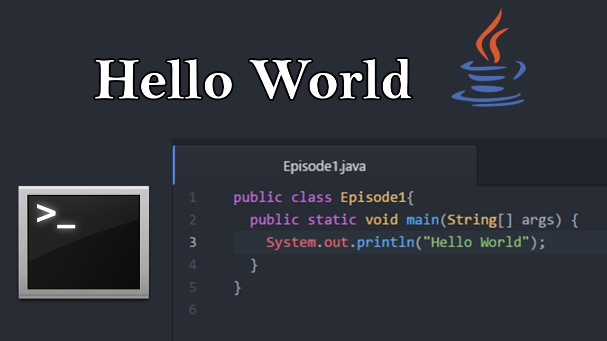

Características Relevantes
- Lenguaje de alto nivel con sintaxis similar a C++, fácil de leer y mantener.
- Compilación en bytecode que permite ejecutar el programa en la Java Virtual Machine (JVM).
- Biblioteca estándar extensa que facilita el desarrollo de aplicaciones de escritorio, móviles y web.
- Soporte para programación distribuida a través de tecnologías como RMI y CORBA.
Tipos de datos comunes
- Datos primitivos: byte, short, int, long, float, double, char, boolean
- Datos referenciados: clases, interfaces, arrays
- Clases envolventes: Integer, Double, Boolean, etc.
Ventajas y desventajas
- Ventajas:
- Amplio soporte en la industria y comunidad de desarrolladores.
- Actualizaciones frecuentes con nuevas funcionalidades.
- Alto rendimiento gracias a mejoras en JVM modernas.
- Desarrollo estructurado y mantenible.
- Desventajas:
- Requiere instalación de JVM para ejecutar las aplicaciones.
- Mayor consumo de recursos frente a otros lenguajes como C.
- Puede ser más lento en comparación con lenguajes nativos.
- Algunos errores no se detectan hasta el tiempo de ejecución.
Ejemplo de "Hola Mundo"
